Top Masteries
 By
MrOwnership
By
MrOwnership
Contents
- Intro
- Current Champions
- Notable Milestones
-
Category Rankings
- Total Awards
- Total Awards (Excluding Hacks)
- Event Awards
- Site Awards
- Amstrad CPC
- Apple II
- Arcade
- Arduboy
- Atari 2600
- Dreamcast
- Fairchild Channel F
- Game Boy
- Game Boy Advance
- Game Boy Color
- Game Gear
- Hack Champ
- Homebrew Champ
- Master System
- Mega Drive
- Mega Duck
- Nintendo 64
- NES
- Nintendo DS
- PC Engine
- PC Engine CD
- PC-8000/8800
- PlayStation
- PlayStation 2
- PlayStation Portable
- Pokémon Mini
- Sega Saturn
- Sega CD
- SNES
- Virtual Boy
- WASM-4
- Watara Supervision
Intro
We are going to take a look at another metric for greatness, Mastery Awards. Mastery awards are given to users when they complete every achievement for a given set in hardcore mode. Users wear mastery awards as a badge of honor on their profile page representing all the hard work they put into truly becoming a master of the game.
Below we will take a look at which users rank among the best with the most mastery awards in several categories well as notable updates from the previous month to each individual category. Check to see how you rank among the rest of the community members.
Special thanks to  Nydaxn for creating the ranking image templates.
Nydaxn for creating the ranking image templates.
* Data as of January 1st 2022.
Current Champions
|
|
|
Mastery Awards | |
|---|---|---|---|
| Total Awards |  guineu guineu |
1011 | |
| Event Awards |
 freezestar, freezestar,  Hotscrock & Hotscrock &  Xymjak Xymjak
|
16 | |
| Site Awards |  Snow Snow |
23 | |
| 3DO Interactive Multiplayer |  Vyach59 Vyach59 |
12 | |
| Amstrad CPC |  roukanumachi roukanumachi |
15 | |
| Apple II | guineu |
12 | |
| Arcade |  Wendigo Wendigo |
61 | |
| Arduboy |  HolyShinx HolyShinx |
35 | |
| Atari 2600 |  PMniac PMniac |
99 | |
| Atari 7800 | PMniac |
11 | |
| Atari Jaguar | PMniac |
7 | |
| Atari Lynx |
guineu &  Jungon Jungon
|
5 | |
| ColecoVision | PMniac |
10 | |
| Dreamcast |  SteveHarvey SteveHarvey |
19 | |
| Fairchild Channel F |
 alphacrust & alphacrust &  Stomper Stomper
|
21 | |
| Game Boy |  Shootzy Shootzy |
126 | |
| Game Boy Advance |  bonecrusher1022 bonecrusher1022 |
121 | |
| Game Boy Color |  pitapocket17 pitapocket17 |
92 | |
| Game Gear | Nydaxn |
67 | |
| Hack Champ | HolyShinx |
207 | |
| Homebrew Champ |  AuburnRDM AuburnRDM |
185 | |
| Intellivision |
guineu & Jungon
|
14 | |
| Magnavox Odyssey 2 | Jungon |
8 | |
| Master System | Jungon |
80 | |
| Mega Drive |  DUT DUT |
134 | |
| Mega Duck |  AzuchiAkeshi AzuchiAkeshi |
12 | |
| MSX | guineu |
14 | |
| Nintendo 64 |  BenTobitt BenTobitt |
47 | |
| Neo Geo Pocket |  MelodyAsh MelodyAsh |
8 | |
| NES |  SanMarino SanMarino |
244 | |
| Nintendo DS |  Olafur Olafur |
77 | |
| PC Engine |  Infernum Infernum |
34 | |
| PC Engine CD | Infernum |
10 | |
| PC-8000/8800 |  Orph Orph |
12 | |
| PC-FX |
 Annonith & Annonith &  YahwehTzVaoth YahwehTzVaoth
|
4 | |
| PlayStation |  FBiDev FBiDev |
85 | |
| PlayStation 2 |
 donutweegee & Infernum donutweegee & Infernum
|
25 | |
| PlayStation Portable |  minibt minibt |
37 | |
| Pokémon Mini |  Sylrifaide Sylrifaide |
35 | |
| Sega 32X |  Fara0 Fara0 |
4 | |
| Sega Saturn | Orph |
16 | |
| Sega CD | Orph |
10 | |
| SG-1000 |
PMniac & Jungon
|
9 | |
| SNES |  danibodom danibodom |
208 | |
| Vectrex | Jungon |
9 | |
| Virtual Boy | Jungon |
14 | |
| WASM-4 | AuburnRDM |
31 | |
| Watara Supervision | AzuchiAkeshi |
46 | |
| WonderSwan |
Annonith, AuburnRDM & |
3 |
Notable Milestones
300 Mastery Awards
| donutweegee |
200 Mastery Awards
 VectorPrime40 VectorPrime40 |
 TheJ5333 TheJ5333 |
 roukanumahi roukanumahi |
 pitapocke17 pitapocke17 |
 miccmike miccmike |
 CobaltZeroni CobaltZeroni |
 BrothersGames BrothersGames |
AzuchiAkeshi |
 an7xuan an7xuan |
100 Mastery Awards
 williamgeesdorf williamgeesdorf |
 TheGameingChef TheGameingChef |
 Signum Signum |
 Lalilulelo Lalilulelo |
 Grungust Grungust |
 diablo666 diablo666 |
 Advent Advent |
Category Rankings
Total Awards
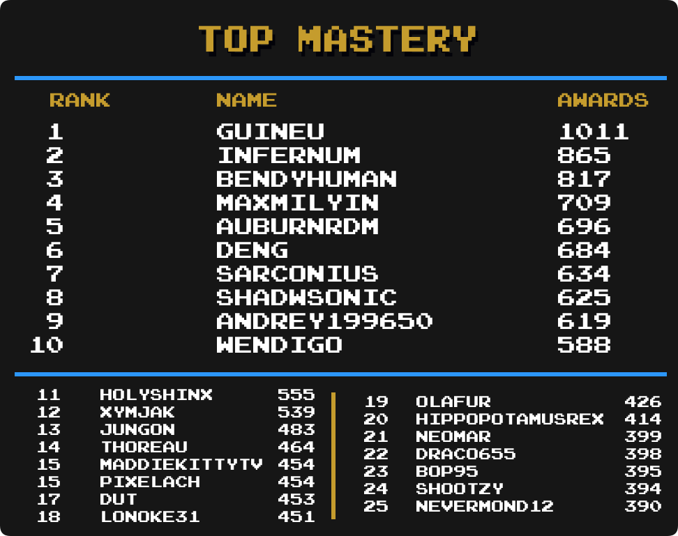
-
guineu remains in 1st with 1011 total mastery awards.
-
 MaddieKittyTV has moved up 2 spots and is tied for 15th place.
MaddieKittyTV has moved up 2 spots and is tied for 15th place. -
 NEOMAR has made it into the top 25 and is in 21st place.
NEOMAR has made it into the top 25 and is in 21st place.
Total Awards (Excluding Hacks)

-
guineu remains in 1st with 988 total mastery awards.
-
 Lonoke31 has moved up 3 spots and is in 15th place.
Lonoke31 has moved up 3 spots and is in 15th place. -
Olafur has moved up 2 spots and is tied for 18th place.
-
 ChronoGear has moved up 1 spot and is in 21st place.
ChronoGear has moved up 1 spot and is in 21st place. -
NEOMAR has made it into the top 25 and is tied for 23rd place.
Event Awards
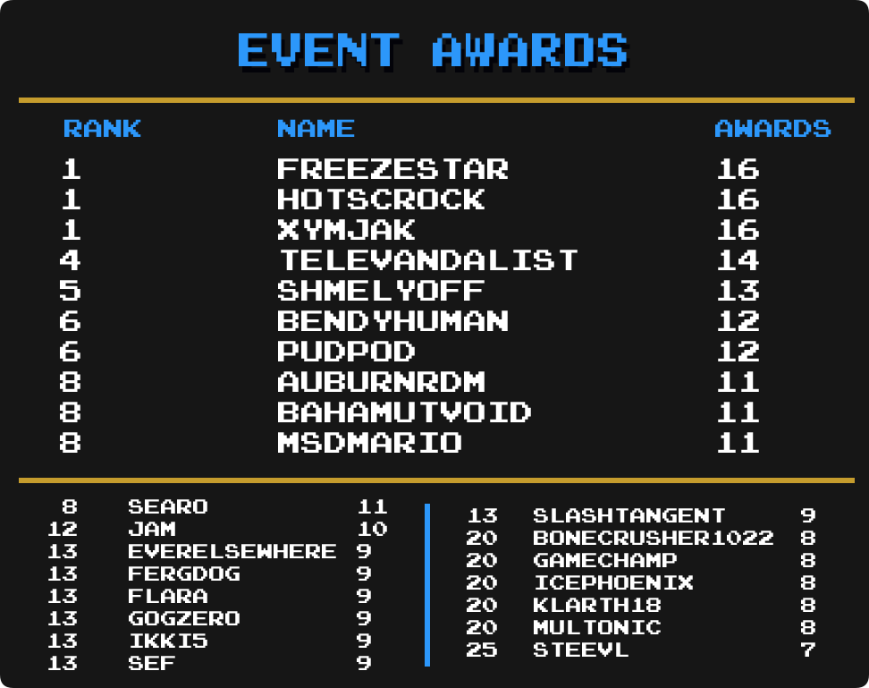
-
freezestar, Hotscrock & Xymjak hold the top 3 spots in the Events Award split.
Site Awards

-
Snow,
 televandalist & a 4-way tie for third between
televandalist & a 4-way tie for third between  ladynadiad,
ladynadiad,  SporyTike,
SporyTike,  voiceofautumn &
voiceofautumn &  wolfman2000 hold the top spots in the Site Awards split.
wolfman2000 hold the top spots in the Site Awards split.
Amstrad CPC
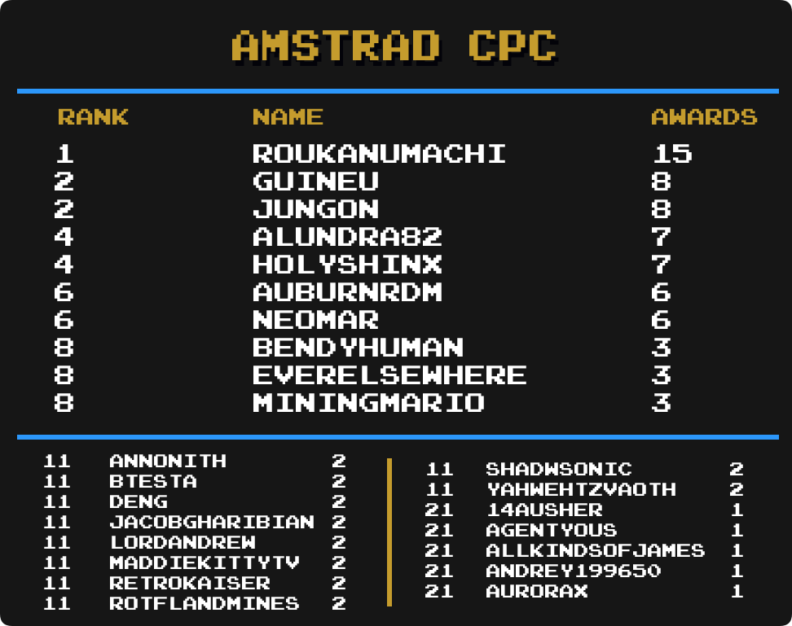
-
roukanumachi remains in 1st with 15 total mastery awards.
-
Jungon has moved up 2 spots and is tied for 2nd place.
-
 AllKindsOfJames has made it into the top 25 and is in a 37-way tie for 21st place.
AllKindsOfJames has made it into the top 25 and is in a 37-way tie for 21st place.
Apple II

-
guineu remains in 1st with 12 total mastery awards.
-
Jungon has moved up 5 spots and is tied for 3rd place.
-
 Etron has moved up 6 spots and is in a 5-way tie for 7th place.
Etron has moved up 6 spots and is in a 5-way tie for 7th place. -
 bTesta has moved up 2 spots and is in a 4-way tie for 12th place.
bTesta has moved up 2 spots and is in a 4-way tie for 12th place. -
 MDGeist has made it into the top 25 and is in a 4-way tie for 12th place.
MDGeist has made it into the top 25 and is in a 4-way tie for 12th place.
Arcade

-
Wendigo has taken 1st place with 61 total mastery awards.
-
 marcelosnp has moved up 1 spot and is tied for 2nd place.
marcelosnp has moved up 1 spot and is tied for 2nd place. -
 missiray has moved up 3 spots and is in 7th place.
missiray has moved up 3 spots and is in 7th place. -
 Exoddis has made it into the top 25 and is in a 6-way tie for 15th place.
Exoddis has made it into the top 25 and is in a 6-way tie for 15th place. -
 RockySilvaBR has made it into the top 25 and is in a 4-way tie for 21st place.
RockySilvaBR has made it into the top 25 and is in a 4-way tie for 21st place. -
 AkumaTNT has made it into the top 25 and is in a 5-way tie for 25th place.
AkumaTNT has made it into the top 25 and is in a 5-way tie for 25th place.
Arduboy

-
HolyShinx remains in 1st with 35 total mastery awards.
-
NEOMAR has moved up 1 spot and is tied for 3rd place.
-
Infernum has moved up 1 spot and is tied for 6th place.
-
 Dominick has moved up 5 spots and is in 8th place.
Dominick has moved up 5 spots and is in 8th place. -
 SuperMeatBro has made it into the top 25 and is tied for 10th place.
SuperMeatBro has made it into the top 25 and is tied for 10th place. -
 Maximdraco has moved up 6 spots and is in a 3-way tie for 15th place.
Maximdraco has moved up 6 spots and is in a 3-way tie for 15th place. -
 Blazekickn has moved up 1 spot and is in a 4-way tie for 19th place.
Blazekickn has moved up 1 spot and is in a 4-way tie for 19th place.
Atari 2600
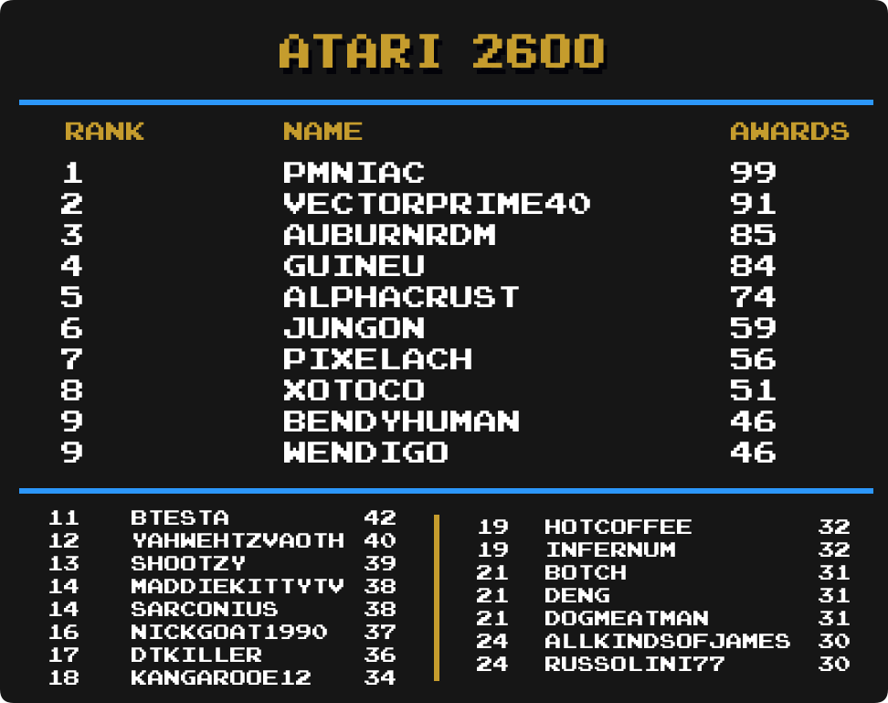
-
PMniac remains in 1st with 99 total mastery awards.
-
VectorPrime40 has moved up 3 spots and is in 2nd place.
-
YahwehTzVaoth has moved up 3 spots and is in 12th place.
-
 Dogmeatman has made it into the top 25 and is in a 3-way tie for 21st place.
Dogmeatman has made it into the top 25 and is in a 3-way tie for 21st place. -
 russolini77 has made it into the top 25 and is in a 3-way tie for 24th place.
russolini77 has made it into the top 25 and is in a 3-way tie for 24th place.
Dreamcast
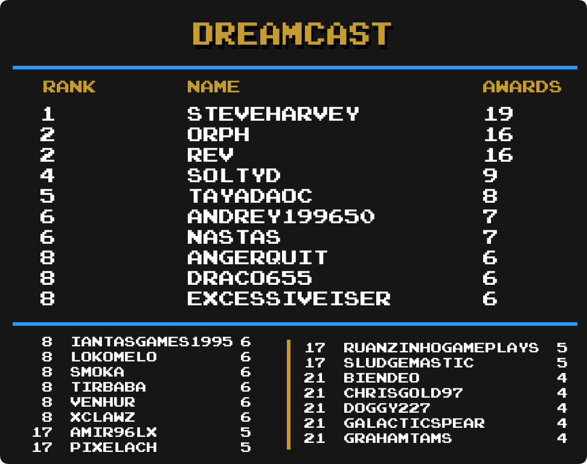
-
SteveHarvey remains in 1st with 19 total mastery awards.
-
Orph has moved up 1 spot and is tied for 2nd place.
-
 Tayadaoc has moved up 2 spots and is in 5th place.
Tayadaoc has moved up 2 spots and is in 5th place. -
 Amir96lx has moved up 1 spot and is in a 4-way tie for 17th place.
Amir96lx has moved up 1 spot and is in a 4-way tie for 17th place. -
 Pixelach &
Pixelach &  sludgemastic have made it into the top 25 and are in a 4-way tie for 17th place.
sludgemastic have made it into the top 25 and are in a 4-way tie for 17th place. -
 ChrisGold97 has made it into the top 25 and is in a 18-way tie for 21st place.
ChrisGold97 has made it into the top 25 and is in a 18-way tie for 21st place.
Fairchild Channel F

-
alphacrust remains in 1st with 21 total mastery awards.
-
Stomper has moved up 1 spot and is tied for 1st place.
-
 ValueOfTime0 has moved up 1 spot and is in 6th place.
ValueOfTime0 has moved up 1 spot and is in 6th place. -
 Nevermond12 has moved up 7 spots and is in a 3-way tie for 8th place.
Nevermond12 has moved up 7 spots and is in a 3-way tie for 8th place. -
Maximdraco has moved up 8 spots and is in a 3-way tie for 14th place.
-
 HolyRayne has moved up 3 spots and is in a 7-way tie for 17th place.
HolyRayne has moved up 3 spots and is in a 7-way tie for 17th place. -
Blazekickn &
 Timmay have made it into the top 25 and are in a 7-way tie for 17th place.
Timmay have made it into the top 25 and are in a 7-way tie for 17th place. -
 AptGaming has made it into the top 25 and is in a 6-way tie for 24th place.
AptGaming has made it into the top 25 and is in a 6-way tie for 24th place.
Game Boy

-
Shootzy remains in 1st with 126 total mastery awards.
-
Sylrifaide has moved up 2 spots and is tied for 8th place.
-
 Xotoco has moved up 1 spot and is in 17th place.
Xotoco has moved up 1 spot and is in 17th place. -
 Sarconius has moved up 2 spots and is in a 3-way tie for 18th place.
Sarconius has moved up 2 spots and is in a 3-way tie for 18th place. -
 seilahehe has made it into the top 25 and is in a 3-way tie for 18th place.
seilahehe has made it into the top 25 and is in a 3-way tie for 18th place. -
Lonoke31 & Maximdraco have made it into the top 25 and are in a 4-way tie for 22nd place.
Game Boy Advance
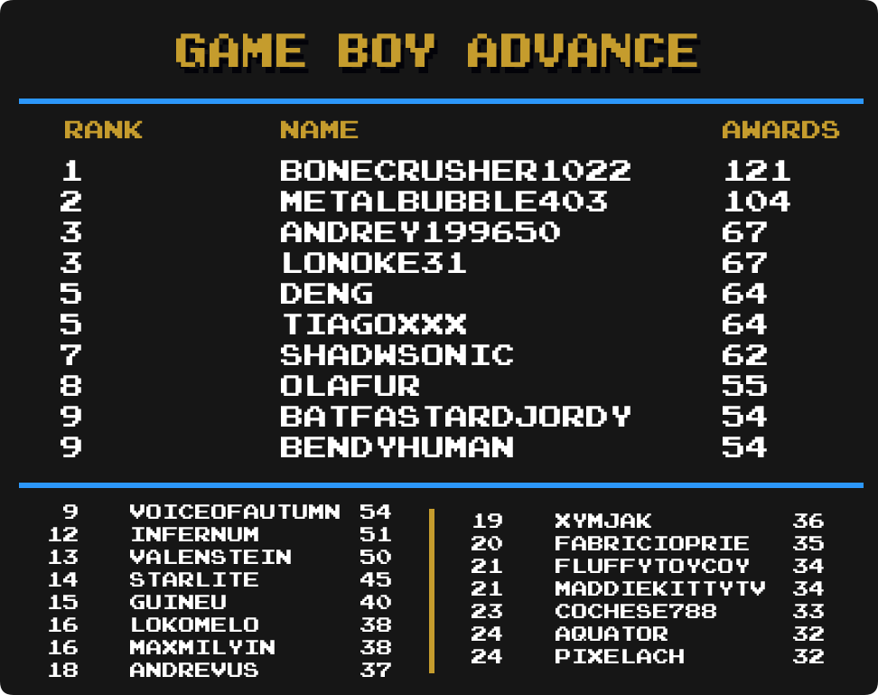
-
bonecrusher1022 remains in 1st with 121 total mastery awards.
-
Infernum has moved up 1 spot and is in 12th place.
-
 cochese788 has made it into the top 25 and is in 23rd place.
cochese788 has made it into the top 25 and is in 23rd place. -
 Aquator has moved up 1 spot and is in a 3-way tie for 24th place.
Aquator has moved up 1 spot and is in a 3-way tie for 24th place.
Game Boy Color

-
pitapocket17 remains in 1st with 92 total mastery awards.
-
 valeforge has moved up 1 spot and is in 4th place.
valeforge has moved up 1 spot and is in 4th place. -
Infernum has moved up 1 spot and is in 6th place.
-
 MaxMilyin has moved up 1 spot and is tied for 18th place.
MaxMilyin has moved up 1 spot and is tied for 18th place.
Game Gear
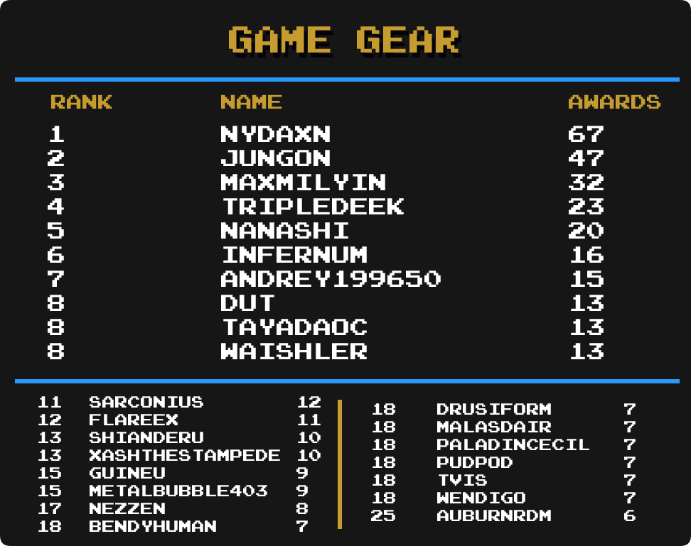
-
Nydaxn remains in 1st with 67 total mastery awards.
-
Jungon has moved up 1 spot and is in 2nd place.
-
 XashTheStampede has moved up 11 spots and is tied for 13th place.
XashTheStampede has moved up 11 spots and is tied for 13th place. -
Wendigo has made it into the top 25 and is in a 7-way tie for 18th place.
-
AuburnRDM has made it into the top 25 and is in a 6-way tie for 25th place.
Hack Champ

-
HolyShinx remains in 1st with 207 total mastery awards.
-
 dericobanjo has moved up 2 spots and is in 2nd place.
dericobanjo has moved up 2 spots and is in 2nd place. -
donutweegee has moved up 1 spot and is in 5th place.
-
Aquator has moved up 2 spots and is in 7th place.
-
 Pampa50 &
Pampa50 &  Wiiner have moved up 1 spot and are tied for 15th place.
Wiiner have moved up 1 spot and are tied for 15th place. -
 leislonjose has moved up 3 spots and is in a 3-way tie for 18th place.
leislonjose has moved up 3 spots and is in a 3-way tie for 18th place.
Homebrew Champ

-
AuburnRDM remains in 1st with 185 total mastery awards.
-
Maximdraco has moved up 3 spots and is in 15th place.
-
 LeakyComet has made it into the top 25 and is tied for 24th place.
LeakyComet has made it into the top 25 and is tied for 24th place.
Master System
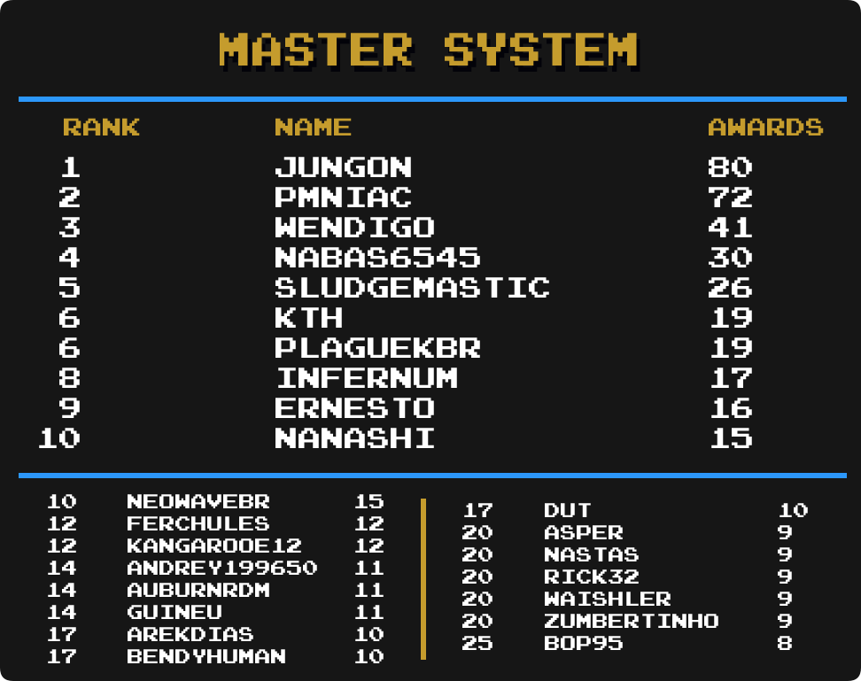
-
Jungon remains in 1st with 80 total mastery awards.
-
Infernum has moved up 1 spot and is in 8th place.
Mega Drive
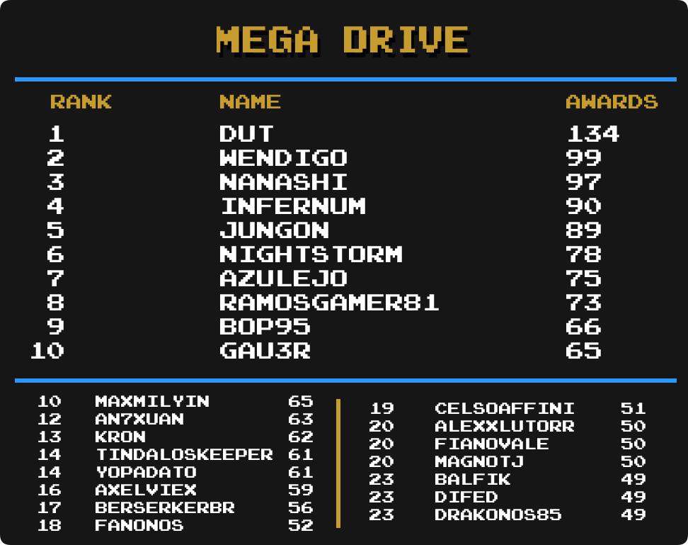
-
DUT remains in 1st with 134 total mastery awards.
-
Wendigo has moved up 1 spot and is in 2nd place.
-
Infernum has moved up 1 spot and is in 4th place.
-
 Fanonos has moved up 2 spots and is in 18th place.
Fanonos has moved up 2 spots and is in 18th place. -
 fianovale has moved up 4 spots and is in a 3-way tie for 20th place.
fianovale has moved up 4 spots and is in a 3-way tie for 20th place.
Mega Duck
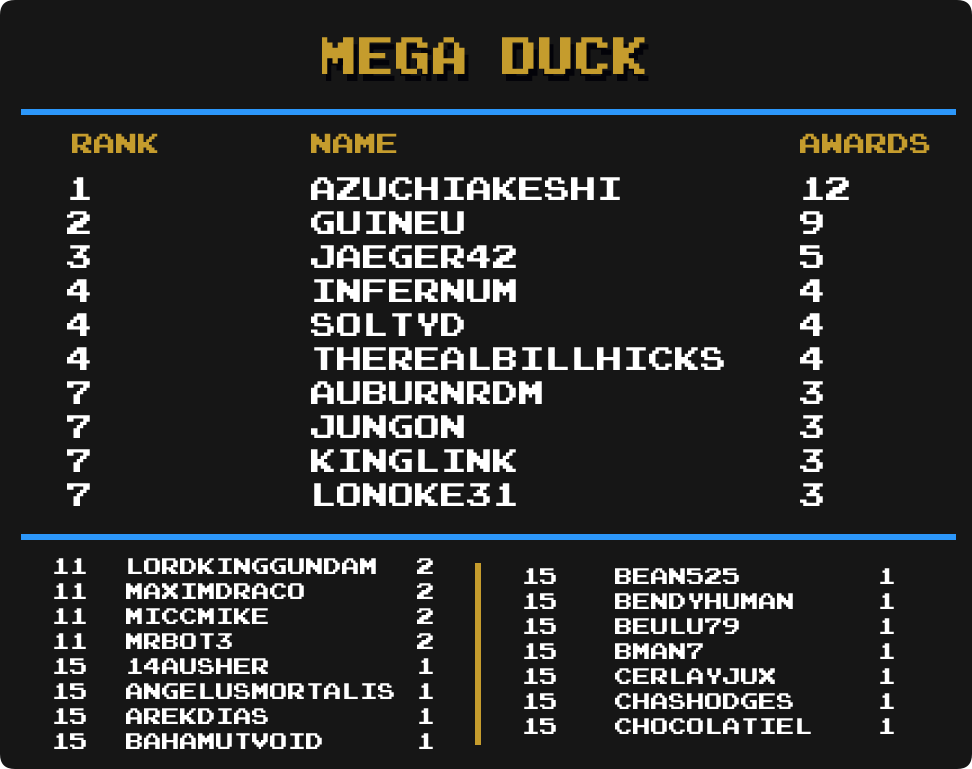
-
AzuchiAkeshi remains in 1st with 12 total mastery awards.
-
AuburnRDM has moved up 3 spots and is in a 4-way tie for 7th place.
-
 LordKingGundam has made it into the top 25 and is in a 4-way tie for 11th place.
LordKingGundam has made it into the top 25 and is in a 4-way tie for 11th place.
Nintendo 64

-
BenTobitt remains in 1st with 47 total mastery awards.
-
 LevelUpLudo has made it into the top 25 and is in 14th place.
LevelUpLudo has made it into the top 25 and is in 14th place.
NES

-
SanMarino remains in 1st with 244 total mastery awards.
-
 Mosk59 has moved up 2 spots and is in 11th place.
Mosk59 has moved up 2 spots and is in 11th place. -
 SamsamDaGameMan has moved up 1 spot and is tied for 20th place.
SamsamDaGameMan has moved up 1 spot and is tied for 20th place. -
Infernum has made it into the top 25 and is in 23rd place.
-
ChronoGear has made it into the top 25 and is tied for 24th place.
Nintendo DS

-
Olafur remains in 1st with 77 total mastery awards.
-
Aquator has moved up 1 spot and is tied for 3rd place.
-
Blazekickn has moved up 2 spots and is tied for 10th place.
-
MaddieKittyTV has moved up 4 spots and is tied for 12th place.
-
 MiningMario has moved up 5 spots and is in a 4-way tie for 15th place.
MiningMario has moved up 5 spots and is in a 4-way tie for 15th place. -
Lonoke31 has made it into the top 25 and is in a 6-way tie for 22nd place.
PC Engine

-
Infernum remains in 1st with 34 total mastery awards.
-
XashTheStampede has moved up 2 spots and is in a 3-way tie for 9th place.
-
NEOMAR has moved up 2 spots and is tied for 14th place.
-
 Arekdias &
Arekdias &  FabricioPrie have made it into the top 25 and are in a 7-way tie for 20th place.
FabricioPrie have made it into the top 25 and are in a 7-way tie for 20th place.
PC Engine CD
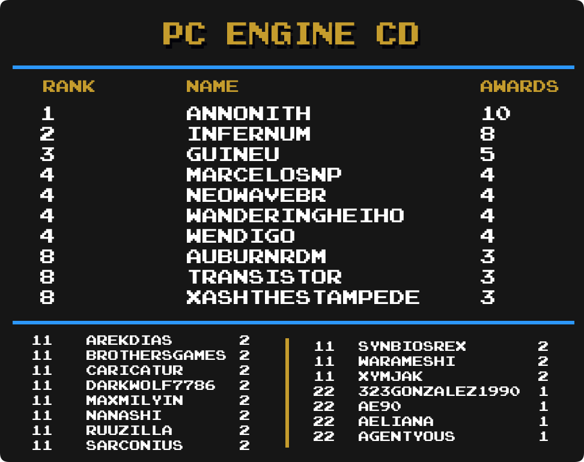
-
Annonith remains in 1st with 10 total mastery awards.
PC-8000/8800
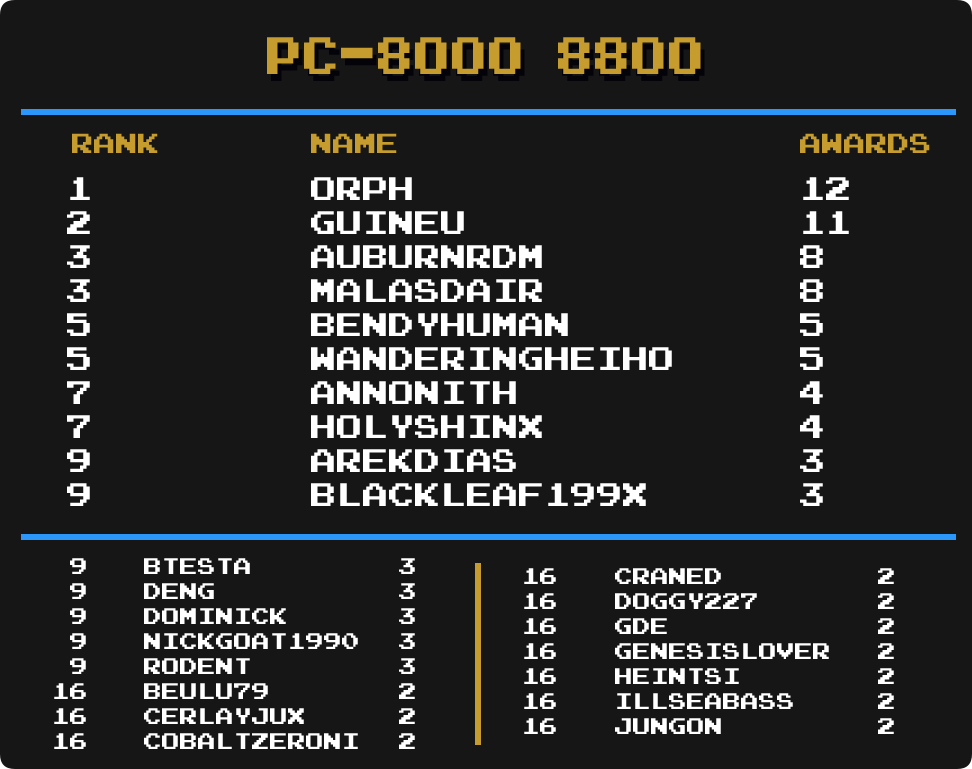
-
Orph has taken 1st place with 12 total mastery awards.
-
 genesislover has made it into the top 25 and is in a 17-way tie for 16th place.
genesislover has made it into the top 25 and is in a 17-way tie for 16th place.
PlayStation

-
FBiDev remains in 1st with 85 total mastery awards.
-
 Mentro has moved up 1 spot and is in 6th place.
Mentro has moved up 1 spot and is in 6th place. -
williamgeesdorf has moved up 1 spot and is in 13th place.
-
 DEATHDragon has moved up 1 spot and is tied for 15th place.
DEATHDragon has moved up 1 spot and is tied for 15th place. -
 Fantastic has made it into the top 25 and is tied for 21st place.
Fantastic has made it into the top 25 and is tied for 21st place.
PlayStation 2
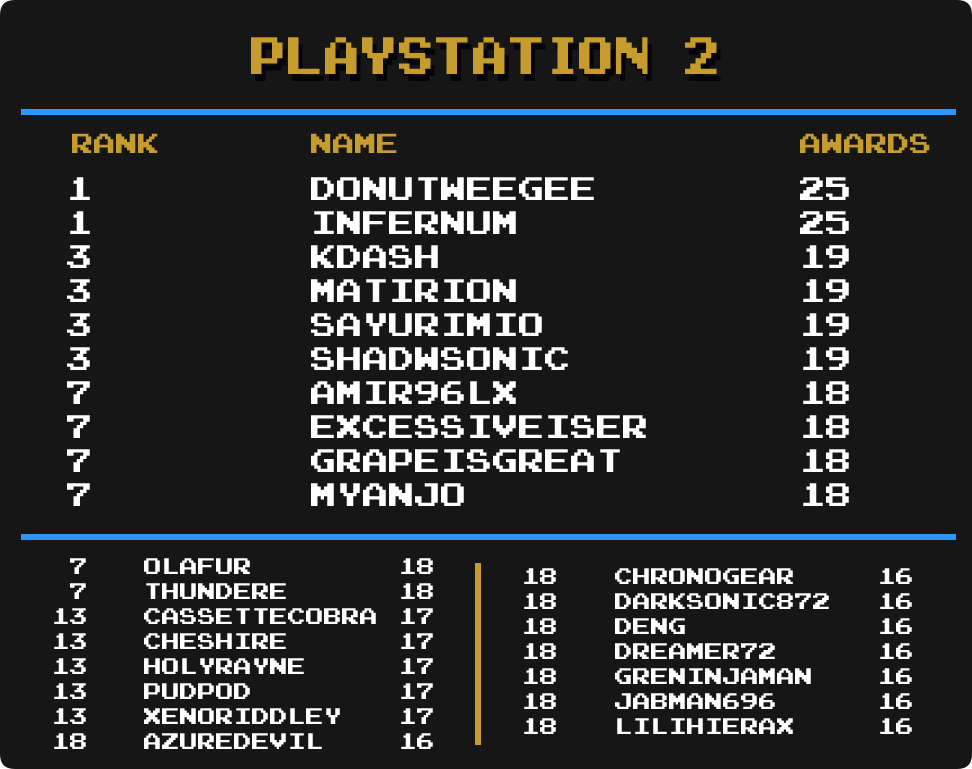
-
donutweegee has taken 1st place with 25 total mastery awards.
-
 SayuriMio has made it into the top 25 and is in a 4-way tie for 3rd place.
SayuriMio has made it into the top 25 and is in a 4-way tie for 3rd place. -
Amir96lx has moved up 1 spot and is in a 6-way tie for 7th place.
-
Olafur has moved up 13 spots and is in a 6-way tie for 7th place.
-
 Excessiveiser,
Excessiveiser,  Myanjo &
Myanjo &  thundere have made it into the top 25 and are in a 6-way tie for 7th place.
thundere have made it into the top 25 and are in a 6-way tie for 7th place. -
 Cheshire has moved up 5 spots and is in a 5-way tie for 13th place.
Cheshire has moved up 5 spots and is in a 5-way tie for 13th place. -
 CassetteCobra & HolyRayne has made it into the top 25 and is in a 5-way tie for 13th place.
CassetteCobra & HolyRayne has made it into the top 25 and is in a 5-way tie for 13th place. -
ChronoGear,
 darksonic872, Blazekickn &
darksonic872, Blazekickn &  Lilihierax have made it into the top 25 and are in a 14-way tie for 18th place.
Lilihierax have made it into the top 25 and are in a 14-way tie for 18th place.
PlayStation Portable

-
minibt remains in 1st with 37 total mastery awards.
-
 deathbychipmunk has moved up 1 spot and is in a 4-way tie for 18th place.
deathbychipmunk has moved up 1 spot and is in a 4-way tie for 18th place. -
 TheLooseGroose has moved up 5 spots and is in a 4-way tie for 18th place.
TheLooseGroose has moved up 5 spots and is in a 4-way tie for 18th place. -
 AntonioFNN has made it into the top 25 and is in a 3-way tie for 25th place.
AntonioFNN has made it into the top 25 and is in a 3-way tie for 25th place.
Pokémon Mini

-
Sylrifaide remains in 1st with 35 total mastery awards.
-
MaddieKittyTV has moved up 1 spot and is tied for 8th place.
-
 Xinorok has moved up 6 spots and is tied for 10th place.
Xinorok has moved up 6 spots and is tied for 10th place.
Sega Saturn
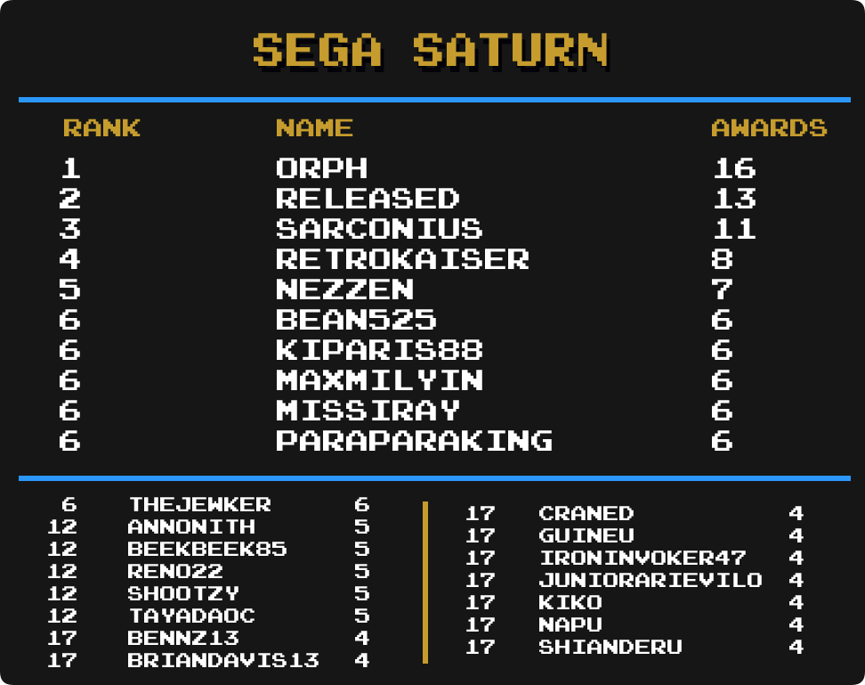
-
Orph remains in 1st with 16 total mastery awards.
-
 Released has moved up 1 spot and is in 2nd place.
Released has moved up 1 spot and is in 2nd place. -
Sarconius has moved up 1 spot and is in 3rd place.
-
 Retrokaiser has moved up 1 spot and is in 4th place.
Retrokaiser has moved up 1 spot and is in 4th place. -
 nezzen has moved up 1 spot and is in 5th place.
nezzen has moved up 1 spot and is in 5th place. -
 Bean525 has made it into the top 25 and is in a 6-way tie for 6th place.
Bean525 has made it into the top 25 and is in a 6-way tie for 6th place. -
 Reno22 has moved up 10 spots and is in a 5-way tie for 12th place.
Reno22 has moved up 10 spots and is in a 5-way tie for 12th place. -
 BrianDavis13 has made it into the top 25 and is in a 10-way tie for 17th place.
BrianDavis13 has made it into the top 25 and is in a 10-way tie for 17th place.
Sega CD
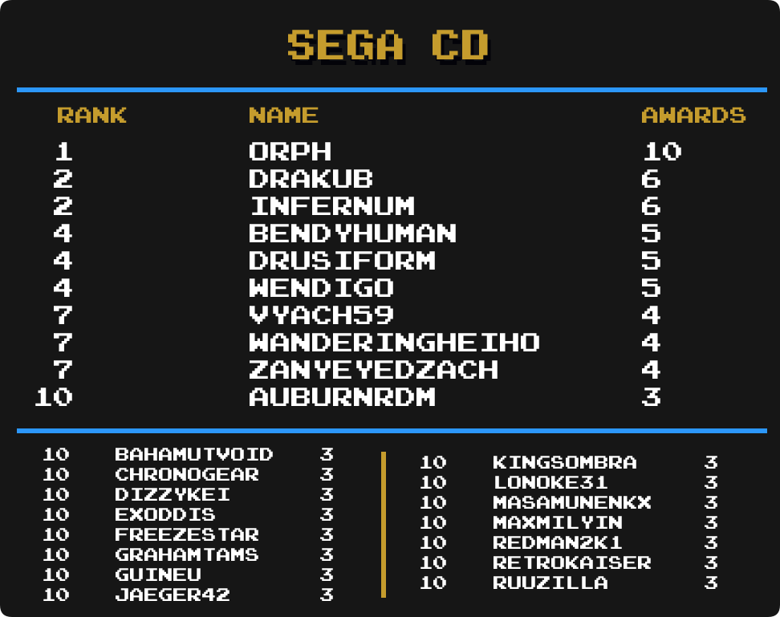
-
Orph remains in 1st with 10 total mastery awards.
-
 Drakub has moved up 1 spot and is tied for 2nd place.
Drakub has moved up 1 spot and is tied for 2nd place. -
Infernum has moved up 2 spots and is tied for 2nd place.
-
Vyach59 has moved up 15 spots and is in a 3-way tie for 7th place.
-
Exoddis,
 Grahamtams,
Grahamtams,  Kingsombra & Lonoke31 have made it into the top 25 and are in a 17-way tie for 10th place.
Kingsombra & Lonoke31 have made it into the top 25 and are in a 17-way tie for 10th place.
SNES

-
danibodom remains in 1st with 208 total mastery awards.
-
Sarconius has moved up 1 spot and is in 5th place.
-
Infernum has moved up 1 spot and is in 12th place.
-
Wendigo has moved up 2 spots and is in 13th place.
-
 Madawk has moved up 2 spots and is in 20th place.
Madawk has moved up 2 spots and is in 20th place.
Virtual Boy
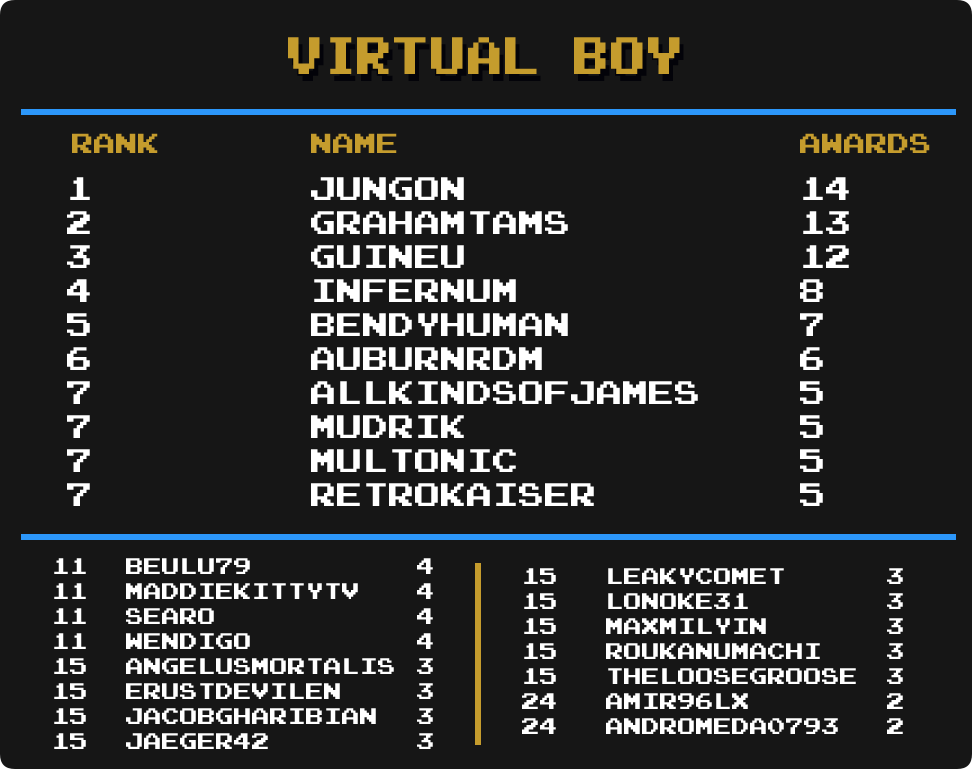
-
Jungon has taken 1st place with 14 total mastery awards.
-
Infernum has moved up 1 spot and is in 4th place.
-
Retrokaiser has moved up 2 spots and is in a 4-way tie for 7th place.
WASM-4
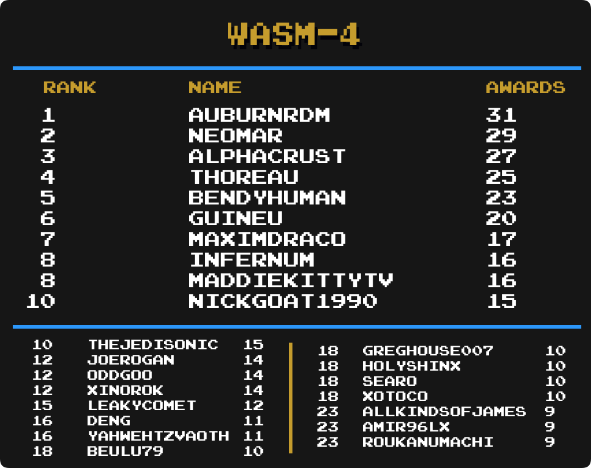
-
AuburnRDM remains in 1st with 31 total mastery awards.
-
NEOMAR has moved up 1 spot and is in 2nd place.
-
 TheJediSonic has made it into the top 25 and is tied for 10th place.
TheJediSonic has made it into the top 25 and is tied for 10th place. -
 JoeRogan has made it into the top 25 and is in a 3-way tie for 12th place.
JoeRogan has made it into the top 25 and is in a 3-way tie for 12th place. -
LeakyComet has made it into the top 25 and is in 15th place.
-
Blazekickn has moved up 3 spots and is tied for 16th place.
-
 Searo has made it into the top 25 and is in a 5-way tie for 18th place.
Searo has made it into the top 25 and is in a 5-way tie for 18th place.
Watara Supervision

-
AzuchiAkeshi has taken 1st place with 46 total mastery awards.
-
NEOMAR has moved up 2 spots and is in 15th place.
-
Lonoke31 has made it into the top 25 and is in a 7-way tie for 16th place.